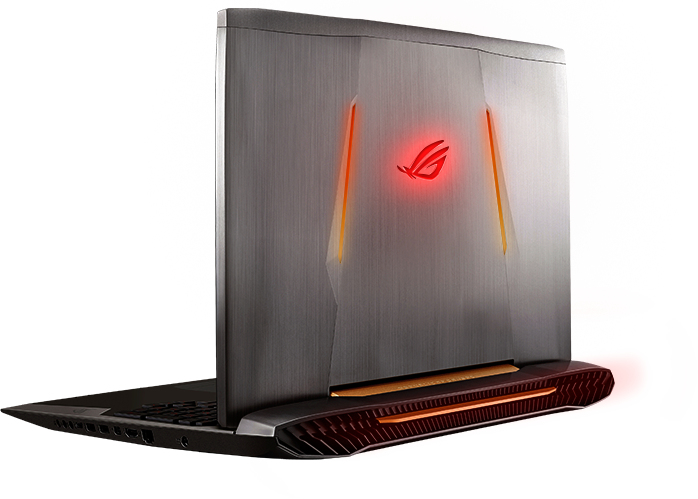

ASUS ROG G752 SERIES
The all-new Republic of Gamers (ROG) G752 is here to show you the next evolution of mobile gaming, featuring a revolutionary design finished in a new Armor Titanium and Plasma Copper color scheme. Also packed within under its armor is a 6th-generation Intel® Core™ i7 processor, newly designed dust-release thermal fan and a backlit anti-ghosting gaming keyboard with 30-key rollover to ensure high performance and smooth gameplay control in every battle.
Specs
- Screen Size: 17.3 inches
- Screen Resolution: 1920 x 1080
- Processor: 2.6 GHz Core i7 6700HQ
- RAM: 16 GB DDR4-SDRAM
- Memory Speed:2133 MHz
- Hard Drive: 1 TB HDD + NVMe
- Graphics Coprocessor: NVIDIA GTX970M 3GB/6GB GDDR5/ GTX980M 4GB/8GB GDDR5/
GTX960M 2GB GDDR5
- Wireless Type: 802.11 A/C
- Number of USB 3.0 Ports: 4
- Operating System:Windows 10
- Item Weight: 8.8 pounds
- Product Dimensions:12.7 x 16.4 x 1.5 inches
- Flash Memory Size: 128
- Hard Drive Rotational Speed: 7200 RPM
- Optical Drive Type:DL DVD±RW/CD-RW